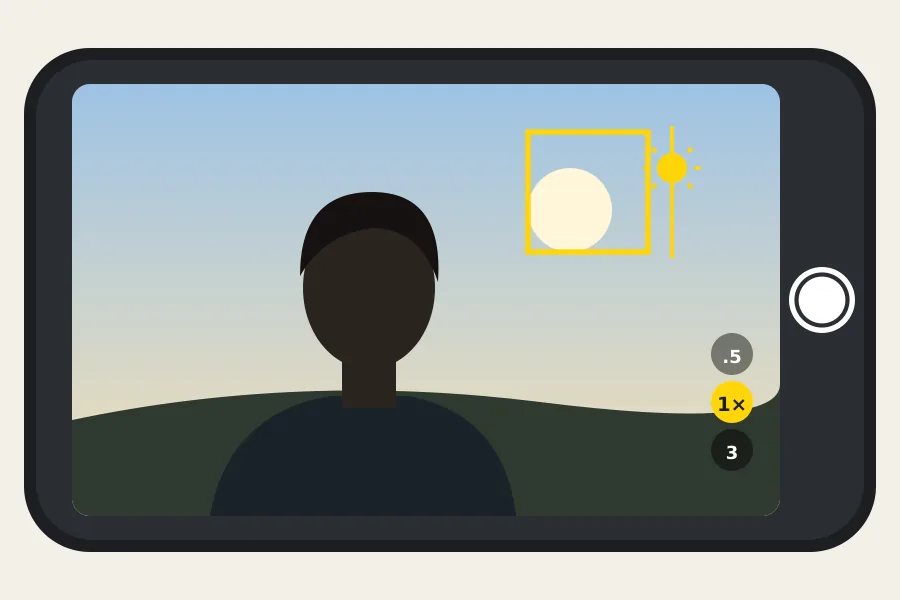
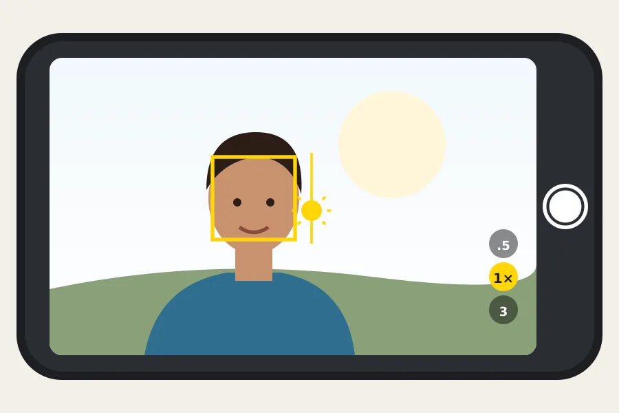

Everything in this book works on a phone. Composition, light, colour and timing don’t care what you hold. A phone is a camera with a tiny sensor and an enormous amount of software, and knowing how the two behave gets you much better pictures. Start with the simplest tip of all. Wipe the lens. A greasy fingerprint turns every picture hazy, and phones live in pockets.
Focus and exposure


Tap the screen where you want the phone to focus, and it sets the exposure for that spot as well. Press and hold, and on most phones focus and exposure lock until you tap again. Next to the focus square there’s usually a small sun or a slider. Drag it to make the picture brighter or darker before you shoot.
Use this to protect the highlights. Phones love to brighten faces until the sky burns out. In a backlit scene decide what matters, the face or the sky, and set the brightness for that (chapter 3). Turning on the grid in the camera settings helps with the horizon and the thirds (chapter 1).
The different lenses
Most phones have two or more cameras, shown as 0.5×, 1× and something like 3× or 5×. The main camera has the biggest sensor and gives the best quality, especially in low light. The others are smaller. Zooming past the longest lens only crops the picture, so walk closer instead. The ultra-wide stretches anything near the edges (chapter 14), so keep faces towards the middle.
Night and portrait modes
Phones get much of their quality from software. When you press the button they combine several frames into one, which is how a tiny sensor holds both a bright sky and dark shadows. Night mode stretches this over a second or more, so hold very still until it finishes or rest the phone on something. Portrait mode fakes a shallow depth of field. It works well on faces, but check the edges of hair and glasses, where it can blur the wrong things. Many phones also smooth skin by default, so look for the setting if your portraits look plastic.
Raw and pro modes
Many phones can shoot raw files, often called DNG, or offer a pro mode with manual ISO, shutter speed and focus. Raw files are bigger and need editing, but they keep far more detail in the highlights and shadows (chapter 18). Some phones offer a processed raw format that mixes the multi-frame tricks with raw flexibility. For everyday snaps the normal mode is fine. For a picture you care about, raw gives you room to work.
Exercises
Exercises G1–G4. Tick each one off when you’ve tried it. Your ticks stay on this phone or computer.
- G1
Your phone’s lenses
Photograph one scene with each of your phone’s cameras without moving. Then walk closer with the main camera until it matches the longest one, and compare.
- G2
Lock and slide
In a backlit scene, set the exposure once for the sky and once for a face. Decide which picture you prefer.
- G3
Night mode
At dusk, take the same picture with night mode on and off. Rest the phone on a wall for one more version.
- G4
Phone only
For one week, take all your pictures for the monthly theme with your phone. Share your favourite with the club.
Photography Handbook, © 2026 Samskara Photo Club. Text and illustrations are licensed under CC BY-NC-SA 4.0. You may share and adapt them for non-commercial use if you credit the club and share your version under the same licence. Commercial use needs the club’s permission. The club logo is not covered by the licence.